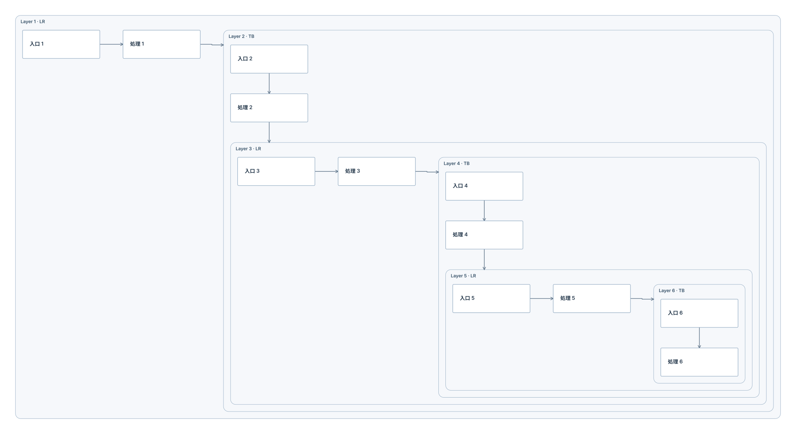
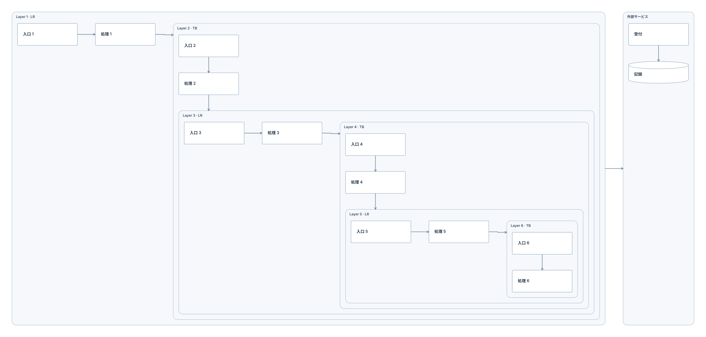
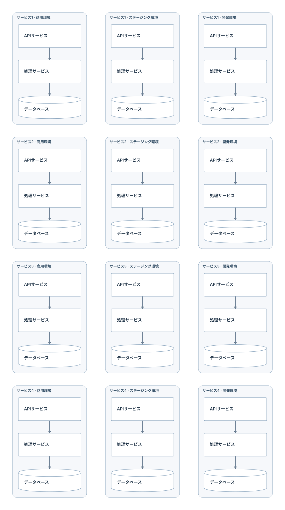

階層ごとに組み立てるレイアウト
子の寸法から親を計算。方向と接続を保ちながら、グリッド・セル結合・多重入れ子を配置します。
LR → TB を6階層
階層ごとの方向を維持し、ノード間隔に深さ分の余白を加えない配置です。
Mermaid · SVG · PNG 2472 × 1352px ／ 12 nodes · 11 edges

変更前と比較：4968 × 2328 → 2472 × 1352px
深い入れ子と小さな外部サービス
列の幅を内容に合わせます。小さな外部サービスの列まで広げません。
Mermaid · SVG · PNG 2828 × 1352px ／ 14 nodes · 13 edges

変更前と比較：9936 × 2328 → 2828 × 1352px
3環境 × 4サービス
列は商用・ステージング・開発、行はサービス1〜4。
Mermaid · SVG · PNG 1092 × 1952px ／ 36 nodes · 24 edges

変更前と比較：1260 × 2098 → 1092 × 1952px
グリッドは標準Mermaidの意味構造を変えない表示設定です。任意のグラフで交差ゼロを保証するものではありません。